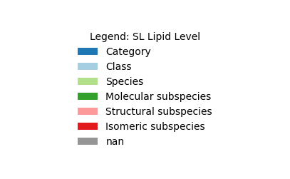

Explore SwissLipids#
Exploring SwissLipids from a network perspective
Loading dependencies and data#
from lipinet.parse_swisslipids import parse_swisslipids_data
sl_results = parse_swisslipids_data(verbose=False, use_cache=True, force_download=False)
df_sl_nodes = sl_results['df_nodes']
df_sl_edges = sl_results['df_edges']
from graph_tool.all import Graph, GraphView, graph_draw
import graph_tool as gt
from onionnet import OnionNet
import onionnet.visualisation
import pandas as pd
Building the network with OnionNet#
onion = OnionNet()
onion.grow_onion(df_nodes=df_sl_nodes,
df_edges=df_sl_edges,
node_prop_cols=df_sl_nodes.columns.to_list(),
edge_prop_cols=df_sl_edges.columns.to_list(),
drop_na=True,
drop_duplicates=True)
Nodes: in=2779077, dropped_na=0, deduped=0 → final=2779077
Edges: in=6890966, dropped_invalid=8, deduped=0 → final=6890958
This has built the network, with about 2.7 million nodes and around 7 million edges - within 30 seconds on a decent laptop!
onion.core.graph
<Graph object, directed, with 2779077 vertices and 6890958 edges, 34 internal vertex properties, 5 internal edge properties, at 0x4032efad0>
Hopefully it goes without saying that this is far too large to visualise for us at this stage. So instead we’ll begin by looking at the top of the network using the Lipid entry as the root node. We can see it in the table below, with the node_id SLM:000389145
df_sl_nodes[df_sl_nodes['Level']=='Category']
| layer | node_id | Lipid ID | Level | Name | Abbreviation* | Synonyms* | Lipid class* | Parent | Components* | ... | Exact m/z of [M+NH4]+ | Exact m/z of [M-H]- | Exact m/z of [M+Cl]- | Exact m/z of [M+OAc]- | CHEBI | LIPID MAPS | HMDB | MetaNetX | PMID | Components_parsed | |
|---|---|---|---|---|---|---|---|---|---|---|---|---|---|---|---|---|---|---|---|---|---|
| 2000016 | swisslipids | SLM:000000525 | SLM:000000525 | Category | Sphingolipids | SL | NaN | SLM:000389145 | NaN | NaN | ... | NaN | NaN | NaN | NaN | 26739 | NaN | NaN | MNXM82564 | NaN | NaN |
| 2000508 | swisslipids | SLM:000001193 | SLM:000001193 | Category | Glycerophospholipids | GP | NaN | SLM:000389145 | NaN | NaN | ... | NaN | NaN | NaN | NaN | 37739 | NaN | NaN | MNXM55319 | NaN | NaN |
| 2116449 | swisslipids | SLM:000117142 | SLM:000117142 | Category | Glycerolipids | GL | NaN | SLM:000389145 | NaN | NaN | ... | NaN | NaN | NaN | NaN | 35741 | NaN | NaN | MNXM55310 | NaN | NaN |
| 2386968 | swisslipids | SLM:000389145 | SLM:000389145 | Category | Lipid | NaN | NaN | <NA> | NaN | NaN | ... | NaN | NaN | NaN | NaN | 18059 | NaN | NaN | MNXM12117 | NaN | NaN |
| 2387551 | swisslipids | SLM:000390054 | SLM:000390054 | Category | Fatty acyls and derivatives | NaN | NaN | SLM:000389145 | NaN | NaN | ... | NaN | NaN | NaN | NaN | 61697 | NaN | NaN | MNXM512004 | NaN | NaN |
| 2497591 | swisslipids | SLM:000500463 | SLM:000500463 | Category | Steroids and derivatives | NaN | NaN | SLM:000389145 | NaN | NaN | ... | NaN | NaN | NaN | NaN | 35341 | NaN | NaN | MNXM682861 | NaN | NaN |
| 2505886 | swisslipids | SLM:000508860 | SLM:000508860 | Category | Prenol Lipids | NaN | NaN | SLM:000389145 | NaN | NaN | ... | NaN | NaN | NaN | NaN | 26244 | NaN | NaN | NaN | NaN | NaN |
7 rows × 32 columns
We can get all these nodes on this level and visualise in a very simple plot
First, decode some of the graph properties to a more human readable format
extra_vars = ['layer', 'node_id'] #, 'Lipid ID']
for var in extra_vars:
onion.prop_manager.decode_property_labels(
encoded_prop_type='v',
encoded_prop_name=var
)
# do the Lipid ID separately bc of the gaps
onion.prop_manager.decode_property_labels(
encoded_prop_type='v',
encoded_prop_name='Lipid ID',
new_prop_name='lipidid_decoded'
)
onion.prop_manager.decode_property_labels(
encoded_prop_type='v',
encoded_prop_name='Lipid class*',
new_prop_name='lipidclass_decoded'
)
onion.prop_manager.decode_property_labels(
encoded_prop_type='v',
encoded_prop_name='Name',
new_prop_name='name_decoded'
)
onion.prop_manager.decode_property_labels(
encoded_prop_type='v',
encoded_prop_name='Level',
new_prop_name='level_decoded'
)
onion.prop_manager.decode_property_labels(
encoded_prop_type='v',
encoded_prop_name='CHEBI',
new_prop_name='chebi_decoded'
)
onion.prop_manager.decode_property_labels(
encoded_prop_type='v',
encoded_prop_name='LIPID MAPS',
new_prop_name='lipidmaps_decoded'
)
onion.prop_manager.decode_property_labels(
encoded_prop_type='v',
encoded_prop_name='HMDB',
new_prop_name='hmdb_decoded'
)
onion.prop_manager.decode_property_labels(
encoded_prop_type='e',
encoded_prop_name='interlayer',
new_prop_name='interlayer_decoded'
)
V property 'layer_decoded' created successfully.
V property 'node_id_decoded' created successfully.
V property 'lipidid_decoded' created successfully.
V property 'lipidclass_decoded' created successfully.
V property 'name_decoded' created successfully.
V property 'level_decoded' created successfully.
V property 'chebi_decoded' created successfully.
V property 'lipidmaps_decoded' created successfully.
V property 'hmdb_decoded' created successfully.
E property 'interlayer_decoded' created successfully.
Filtering the network#
Now let’s use some filtering logic to only get those with the ‘Category’ level
filter1 = lambda v: onion.core.graph.vp['level_decoded'][v] == 'Category'
filtered_view = onion.searcher.compose_filters(filter_funcs=[filter1], mode="or")
filtered_view
<GraphView object, directed, with 7 vertices and 6 edges, 43 internal vertex properties, 6 internal edge properties, edges filtered by (<EdgePropertyMap object with value type 'bool', for Graph 0x40331d9a0, at 0x402efb6b0>, False), vertices filtered by (<VertexPropertyMap object with value type 'bool', for Graph 0x40331d9a0, at 0x108489a60>, False), at 0x40331d9a0>
graph_draw(
filtered_view,
vertex_text=filtered_view.vp['name_decoded'],
vertex_text_position=-2,
vertex_size=40,
vertex_text_color='black'
)

<VertexPropertyMap object with value type 'vector<double>', for Graph 0x40331d9a0, at 0x7525d69c0>
Now what if we want to get those of the Class too? Here we will combine these filters to do that. This time we will also avoid printing the node names since we have so many nodes.
filter1 = lambda v: onion.core.graph.vp['level_decoded'][v] == 'Category'
filter2 = lambda v: onion.core.graph.vp['level_decoded'][v] == 'Class'
filtered_view = onion.compose_filters([filter1, filter2], mode="or")
filtered_view
<GraphView object, directed, with 813 vertices and 491 edges, 43 internal vertex properties, 6 internal edge properties, edges filtered by (<EdgePropertyMap object with value type 'bool', for Graph 0x7525d5880, at 0x10848b860>, False), vertices filtered by (<VertexPropertyMap object with value type 'bool', for Graph 0x7525d5880, at 0x7525d5a30>, False), at 0x7525d5880>
graph_draw(
filtered_view,
vertex_size=4,
vertex_text_color='black'
)

<VertexPropertyMap object with value type 'vector<double>', for Graph 0x7525d5880, at 0x40331c380>
As we can see, this has resulted in many disjointed parts of the network. We may have to revisit our parsing process to double check this has worked correctly.
We can inspect the network on a more granular level too. First, we will find the index of the root node for lipids, then traverse the network.
lipids_root_node = onion.get_vertex_by_name_tuple(layer_name='swisslipids', node_id_str='SLM:000389145')
onion.searcher.search(start_node_idx=lipids_root_node,
max_dist=2,
node_text_prop='node_id_decoded',
vertex_text_position=-2,
vertex_size=10,
vertex_text_color='black')
Filtered graph contains 95 vertices and 94 edges.

<GraphView object, directed, with 95 vertices and 94 edges, 43 internal vertex properties, 6 internal edge properties, edges filtered by (<EdgePropertyMap object with value type 'bool', for Graph 0x108488e90, at 0x7525e9ee0>, False), vertices filtered by (<VertexPropertyMap object with value type 'bool', for Graph 0x108488e90, at 0x7525e9e20>, False), at 0x108488e90>
We could also improve the visualisation of this network to show the different types of nodes
Also, because the swisslipid levels follow a hierarchy (https://www.swisslipids.org/#/about/lipid_hierarchy), we will specify this here directly and assign colors in a standardised manner.
import matplotlib.cm as cm
sl_levels_custom_order = ['Category','Class','Species','Molecular subspecies','Structural subspecies','Isomeric subspecies','nan']
# To use tab10
# sl_levels_custom_colordict = {cat: cm.tab10(i % len(sl_levels_custom_order)) for i, cat in enumerate(sl_levels_custom_order)}
# To use paired colormap, but swap around the order so it looks a little better
# sl_levels_custom_colordict = {
# cat: cm.Paired((i ^ 1) % len(sl_levels_custom_order))
# for i, cat in enumerate(sl_levels_custom_order)
# }
# To use normal paired colormap but swapping class and category cols
sl_levels_custom_colordict = {cat: cm.Paired(i % len(sl_levels_custom_order)) for i, cat in enumerate(sl_levels_custom_order)}
sl_levels_custom_colordict = {**sl_levels_custom_colordict, 'Category': sl_levels_custom_colordict['Class'], 'Class': sl_levels_custom_colordict['Category']}
sl_levels_custom_colordict['nan'] = cm.Greys(0.5)
# Nodes
color_result = onionnet.visualisation.color_nodes(g=onion.core.graph, prop_name="level_decoded", method="categorical", generate_legend=True, custom_color_dict=sl_levels_custom_colordict)
shape_result = onionnet.visualisation.shape_nodes(g=onion.core.graph, prop_name="layer_decoded", shape_method="categorical", generate_legend=True)
halo_result = onionnet.visualisation.add_halo_to_node(g=onion.core.graph, node=lipids_root_node)
# Edges
edges_interlayer_col = onionnet.visualisation.color_edges(g=onion.core.graph, prop_name='interlayer', method='boolean')
# Create summary dict for convenience
graphic_styles = {**color_result, **shape_result, **halo_result, **edges_interlayer_col}
graphic_styles
# Assign some of the properties that we will likely be using often back to the graph
onion.core.graph.vp['v_color_level'] = graphic_styles['v_color']
onion.core.graph.vp['v_shape_layer'] = graphic_styles['v_shape']
onion.core.graph.ep['e_color_inter'] = graphic_styles['e_color']
search_res = onion.searcher.search(start_node_idx=lipids_root_node, max_dist=2, show_plot=False)
graph_draw(search_res,
vertex_text=search_res.vp['node_id_decoded'],
vertex_text_position=-2,
vertex_size=10,
vertex_text_color='black',
# here we add the graphics from above
vertex_fill_color=search_res.vp['v_color_level'],
vertex_shape=search_res.vp['v_shape_layer'],
edge_color=search_res.ep['e_color_inter'],
)
Filtered graph contains 95 vertices and 94 edges.

<VertexPropertyMap object with value type 'vector<double>', for Graph 0x40331d8b0, at 0x4032b5430>
This hints towards a problem in the SL data. If we look closely we can see that the nodes are coloured by level in the case they are swisslipids. Already we can see that many of the SL lipids do not have an assigned ‘level’. This is most likely why when we used our ‘Level’ filter functionality earlier for the top two highest levels, these nodes were not included, and hence the resulting graph would have appeared far more disjointed than in actual fact it is.
Furthermore if we take an even closer look into some of these, we see that some of the lipids have SL identifiers and ChEBI identifiers, such as ‘SLM:000000436’ which is ‘phospholipid’. But this also does not have a Level assigned to it, has only a single child entry, and if we take a look at the SL data online, it is not included in any of the 7 official categories below Lipids. Instead, one of the other major categories is ‘Glycerophospholipids’, which is a subset of it. While perhaps this may seem trivial, it suggests these kind of problems could be widespread, and they could have ramifications on how we categorise the data or link it to other resources (such as ChEBI).
search_res = onion.searcher.search(start_node_idx=lipids_root_node, max_dist=3, show_plot=False)
graph_draw(search_res,
vertex_text=search_res.vp['node_id_decoded'],
vertex_text_position=-2,
vertex_size=4,
output_size=(800,800),
#output='testing_sl.svg',
vertex_text_color='black',
# here we add the graphics from above
vertex_fill_color=search_res.vp['v_color_level'],
vertex_shape=search_res.vp['v_shape_layer'],
edge_color=search_res.ep['e_color_inter'],
)
Filtered graph contains 733 vertices and 766 edges.

<VertexPropertyMap object with value type 'vector<double>', for Graph 0x4032efce0, at 0x70f4c0680>
Exploring bipartite networks#
ChEBI#
Now what if we want to look at how ChEBI’s map to SwissLipids, and whether there are overlaps?
layer_1 = 'swisslipids'
layer_2 = 'sl_chebi'
gv2 = onion.create_bipartite_gv(layer1=layer_1, layer2=layer_2)
gv2
<GraphView object, directed, with 8553 vertices and 4278 edges, 45 internal vertex properties, 7 internal edge properties, edges filtered by (<EdgePropertyMap object with value type 'bool', for Graph 0x70f4c2f90, at 0x70f4ccbf0>, False), vertices filtered by (<VertexPropertyMap object with value type 'bool', for Graph 0x70f4c2f90, at 0x70f4ccbc0>, False), at 0x70f4c2f90>
graph_draw(gv2,
output_size=(800,800),
edge_pen_width=3.0,
vertex_fill_color=gv2.vp['v_color_level'], nodesfirst=True)

<VertexPropertyMap object with value type 'vector<double>', for Graph 0x70f4c2f90, at 0x402fd2540>
If we wanted to, we could also colour this plot by the SL level. But in this case it probably isn’t informative anway since they are so scattered.
#graph_draw(gv2, vertex_fill_color=search_res.vp['v_color_level'])
What we will do instead is plot the bipartite layout separated by each layer
# Example usage:
# Assume gv2 is your filtered GraphView and each vertex has a 'layer_decoded' property.
pos_by_layer = onionnet.visualisation.layout_by_layer(gv2, layer_prop_name='layer_decoded')
graph_draw(gv2,
pos=pos_by_layer,
output_size=(800, 800),
edge_pen_width=.05,
vertex_fill_color=gv2.vp['v_color_level'],
nodesfirst=False)

<VertexPropertyMap object with value type 'vector<double>', for Graph 0x70f4c2f90, at 0x402fd09e0>
This plot wasn’t awfully informative in this case, because most of the connections between SL and ChEBI appear to have 1:1 relationships. But this in itself is still good to know, because prima facie it would appear there is little ambiguity in the mapping between these two type of formats.
Now let’s try another layer
PMID#
layer_1 = 'swisslipids'
layer_2 = 'sl_pmid'
gv2 = onion.create_bipartite_gv(layer1=layer_1, layer2=layer_2)
gv2
<GraphView object, directed, with 4595 vertices and 10101 edges, 45 internal vertex properties, 7 internal edge properties, edges filtered by (<EdgePropertyMap object with value type 'bool', for Graph 0x70f4cfbf0, at 0x7525e9b80>, False), vertices filtered by (<VertexPropertyMap object with value type 'bool', for Graph 0x70f4cfbf0, at 0x40331db20>, False), at 0x70f4cfbf0>
pos_sfdp_pmid_bipartite = onionnet.visualisation.load_or_compute_layout(gv2, filename='.data/.explore_sl_pos_sfdp_pmid_bipartite.tsv', override=False)
[load] Loaded layout for 4595 rows from .data/.explore_sl_pos_sfdp_pmid_bipartite.tsv
shape_result = onionnet.visualisation.shape_nodes(g=gv2, prop_name="layer_decoded", shape_method="categorical", generate_legend=True)
shape_result['v_shape']
<VertexPropertyMap object with value type 'string', for Graph 0x70f4cfbf0, at 0x6d5a83500>
graph_draw(gv2,
vertex_size=6,
vertex_pen_width=0,
pos=pos_sfdp_pmid_bipartite,
output_size=(1000,1000),
edge_pen_width=0.5,
vertex_fill_color=gv2.vp['v_color_level'],
vertex_shape=shape_result['v_shape'],
nodesfirst=False)
onionnet.visualisation.get_legend(source=graphic_styles['legend_node_color'], title='Legend: SL Lipid Level',
ordered_cats=sl_levels_custom_order, save_filename='.data/explore_sl_pmid_to_sl_legend_cols')


pd.array([item for item in gv2.vp['v_shape_layer']]).value_counts()
hexagon 3066
circle 1529
Name: count, dtype: Int64
Finally, an interesting finding visually from a network perspective, because we can see the relationships between the SL IDs and the PMIDs, being the published literature. This shows:
Some lipids have been widely studied across the literature
But many lipids may be understudied (plus those without PMID)
Studies tend to be associated with lipids of the same level (i.e. colour), probably due to shared experimental methods
Possible bias towards annotations at class, species or isomeric levels
If we want to, we could also save a copy of this network to file as an SVG, with or without the text labels included too.
# temp_nodesize = 4
# temp_outsize = (800,800)
# include_text = False
# if include_text:
# graph_draw(gv2,
# vertex_size=temp_nodesize,
# output_size=temp_outsize,
# vertex_pen_width=0,
# pos=pos_sfdp_pmid_bipartite,
# edge_pen_width=0.50,
# vertex_fill_color=gv2.vp['v_color_level'],
# vertex_shape=gv2.vp['v_shape_layer'],
# nodesfirst=False,
# vertex_text=gv2.vp['node_id_decoded'],
# vertex_text_position=-2,
# vertex_text_color='black',
# output='.data/explore_sl_network_pmid_to_sl_withtext.svg'
# )
# else:
# graph_draw(gv2,
# vertex_size=temp_nodesize,
# output_size=temp_outsize,
# vertex_pen_width=0,
# pos=pos_sfdp_pmid_bipartite,
# edge_pen_width=0.50,
# vertex_fill_color=gv2.vp['v_color_level'],
# vertex_shape=gv2.vp['v_shape_layer'],
# nodesfirst=False,
# output='.data/explore_sl_network_pmid_to_sl.svg'
# )
Again we can create another bipartite network to inspect this.
# gv2 is the filtered GraphView and each vertex has a 'layer_decoded' property.
pos_by_layer = onionnet.visualisation.layout_by_layer(gv2, layer_prop_name='layer_decoded', spacing=50)
graph_draw(gv2,
pos=pos_by_layer,
output_size=(800, 800),
edge_pen_width=.05,
vertex_fill_color=gv2.vp['v_color_level'],
nodesfirst=False)

<VertexPropertyMap object with value type 'vector<double>', for Graph 0x70f4cfbf0, at 0x6d5b07ad0>
This seems to show some lipid nodes with a very high number of connections to the publications, like we saw in the first network plot. But to get a better indication of this we will increase the node sizes, switch their location to the left-handside, and sort them into their classes.
pos_ord_bipartite = onionnet.visualisation.bipartite_ordered_layout(
gv2,
layer_prop='layer_decoded',
left_val=layer_1,
right_val=layer_2,
vertical_spacing=2.0,
horizontal_spacing=6000.0,
sort_left_by=lambda v: tuple(gv2.vp['v_color_level'][v])
)
graph_draw(gv2,
pos=pos_ord_bipartite,
output_size=(800, 800),
edge_pen_width=.05,
vertex_fill_color=gv2.vp['v_color_level'],
nodesfirst=True,
vertex_pen_width=0,
vertex_size=15)
onionnet.visualisation.get_legend(source=graphic_styles['legend_node_color'], title='Legend: SL Lipid Level')

From this we can now see that many of the nodes with the most connections to the literature are of the Isomeric subspecies level, and to a slightly lesser extent, in the Class level. So the most well studied lipids seem to be at these levels, at least qualitatively.
In contrast, we can see that many of the lipids in the Species class have come from a very small number of papers.
HMDB#
layer_1 = 'swisslipids'
layer_2 = 'sl_hmdb'
gv2 = onion.create_bipartite_gv(layer1=layer_1, layer2=layer_2)
graph_draw(gv2,
output_size=(800,800),
edge_pen_width=2.0,
vertex_fill_color=gv2.vp['v_color_level'],
vertex_shape=gv2.vp['v_shape_layer'],
nodesfirst=True)

<VertexPropertyMap object with value type 'vector<double>', for Graph 0x6d5aec110, at 0x348b84c80>
pos_by_layer = onionnet.visualisation.layout_by_layer(gv2, layer_prop_name='layer_decoded')
graph_draw(gv2,
pos=pos_by_layer,
output_size=(800, 800),
edge_pen_width=.05,
vertex_fill_color=gv2.vp['v_color_level'],
nodesfirst=False)

<VertexPropertyMap object with value type 'vector<double>', for Graph 0x6d5aec110, at 0x6d5aecf50>
LipidMaps#
layer_1 = 'swisslipids'
layer_2 = 'sl_lipidmaps'
gv = onion.create_bipartite_gv(layer1=layer_1, layer2=layer_2)
gv
<GraphView object, directed, with 24229 vertices and 12117 edges, 45 internal vertex properties, 7 internal edge properties, edges filtered by (<EdgePropertyMap object with value type 'bool', for Graph 0x6d5b53500, at 0x6d5b533b0>, False), vertices filtered by (<VertexPropertyMap object with value type 'bool', for Graph 0x6d5b53500, at 0x6d5b527b0>, False), at 0x6d5b53500>
graph_draw(gv,
output_size=(800,800),
edge_pen_width=2.0,
vertex_fill_color=gv.vp['v_color_level'],
vertex_shape=gv.vp['v_shape_layer'],
nodesfirst=True)

<VertexPropertyMap object with value type 'vector<double>', for Graph 0x6d5b53500, at 0x6d5b05940>
# Compute in-degree centrality
deg = gv.degree_property_map('out')
pd.Series(deg).value_counts()
1 12117
0 12112
Name: count, dtype: int64
pos_by_layer = onionnet.visualisation.layout_by_layer(gv, layer_prop_name='layer_decoded')
graph_draw(gv,
pos=pos_by_layer,
output_size=(800, 800),
edge_pen_width=.05,
vertex_fill_color=gv.vp['v_color_level'],
nodesfirst=False)

<VertexPropertyMap object with value type 'vector<double>', for Graph 0x6d5b53500, at 0x6d5b53380>
SL Components (parsed)#
layer_1 = 'swisslipids'
layer_2 = 'sl_components_parsed'
gv = onion.create_bipartite_gv(layer1=layer_1, layer2=layer_2)
gv
<GraphView object, directed, with 767000 vertices and 1852844 edges, 45 internal vertex properties, 7 internal edge properties, edges filtered by (<EdgePropertyMap object with value type 'bool', for Graph 0x6d5b41400, at 0x6d5aecda0>, False), vertices filtered by (<VertexPropertyMap object with value type 'bool', for Graph 0x6d5b41400, at 0x6d5b06f60>, False), at 0x6d5b41400>
deg = gv.degree_property_map('in')
pd.Series(deg).value_counts()
0 765323
1 623
4 74
474 69
30 67
2 64
70 64
12 63
6 55
21 51
7 51
20 45
11 37
29 33
9 30
39 29
7263 29
15439 29
5617 28
2350 25
10 25
42 18
6114 17
3473 16
17 16
486 13
31456 12
19 12
410 12
13 10
32 9
16 9
7311 8
45 8
31492 8
14 4
5629 4
36 1
6531 1
6113 1
473 1
15475 1
469 1
5 1
475 1
15438 1
3383 1
Name: count, dtype: int64
We won’t visualise this, because it would be far too large.
SL Synonyms#
layer_1 = 'swisslipids'
layer_2 = 'sl_synonyms'
gv = onion.create_bipartite_gv(layer1=layer_1, layer2=layer_2)
gv
<GraphView object, directed, with 1082944 vertices and 568257 edges, 45 internal vertex properties, 7 internal edge properties, edges filtered by (<EdgePropertyMap object with value type 'bool', for Graph 0x6d5a828a0, at 0x6d5b17f20>, False), vertices filtered by (<VertexPropertyMap object with value type 'bool', for Graph 0x6d5a828a0, at 0x6d5b169c0>, False), at 0x6d5a828a0>
We won’t visualise this, because it would be far too large.
But we can inspect the in- and out-degree of the nodes to identify what the most commonly shared synonyms are for the lipids and their identifiers, thereby identifying which have ambiguities.
First we will consider the ‘in’ degree of the nodes. Since the SL IDs point towards the synonyms, this will indicate the distribution of synonyms that are shared with others.
# Compute in-degree centrality
deg = gv.degree_property_map('in')
pd.Series(deg).value_counts()
0 548163
1 504547
2 28627
4 1486
3 87
8 27
5 7
Name: count, dtype: int64
We can now get all synonyms that, for instance, are mapped to 5 or more SL IDs.
[gv.vp['node_id_decoded'][v] for v in gv.vertices() if gv.vp['layer_decoded'][v] == 'sl_synonyms' and v.in_degree() > 4]
['Diacylglycerol (O-)',
'Lysophosphatidate',
'Lysophosphatidylcholine',
'Lysophosphatidylethanolamine',
'Lysophosphatidylglycerol',
'Lysophosphatidylinositol',
'Lysophosphatidylserine',
'Triacylglycerol (13:0/13:0/13:0)',
'Triacylglycerol (13:0/13:0/15:0)',
'Triacylglycerol (13:0/13:0/17:0)',
'Triacylglycerol (13:0/15:0/13:0)',
'Triacylglycerol (13:0/15:0/15:0)',
'Triacylglycerol (13:0/15:0/17:0)',
'Triacylglycerol (13:0/17:0/13:0)',
'Triacylglycerol (13:0/17:0/15:0)',
'Triacylglycerol (13:0/17:0/17:0)',
'Triacylglycerol (15:0/13:0/13:0)',
'Triacylglycerol (15:0/13:0/15:0)',
'Triacylglycerol (15:0/13:0/17:0)',
'Triacylglycerol (15:0/15:0/13:0)',
'Triacylglycerol (15:0/15:0/15:0)',
'Triacylglycerol (15:0/15:0/17:0)',
'Triacylglycerol (15:0/17:0/13:0)',
'Triacylglycerol (15:0/17:0/15:0)',
'Triacylglycerol (15:0/17:0/17:0)',
'Triacylglycerol (17:0/13:0/13:0)',
'Triacylglycerol (17:0/13:0/15:0)',
'Triacylglycerol (17:0/13:0/17:0)',
'Triacylglycerol (17:0/15:0/13:0)',
'Triacylglycerol (17:0/15:0/15:0)',
'Triacylglycerol (17:0/15:0/17:0)',
'Triacylglycerol (17:0/17:0/13:0)',
'Triacylglycerol (17:0/17:0/15:0)',
'Triacylglycerol (17:0/17:0/17:0)']
Now we can also consider which SL IDs have the highest number of synonyms linked to them
# Compute in-degree centrality
deg = gv.degree_property_map('out')
pd.Series(deg).value_counts()
0 534781
1 528310
2 19620
3 226
4 6
5 1
Name: count, dtype: int64
[gv.vp['node_id_decoded'][v] for v in gv.vertices() if gv.vp['layer_decoded'][v] == 'swisslipids' and v.out_degree() > 3]
['SLM:000508891',
'SLM:000508893',
'SLM:000508950',
'SLM:000509166',
'SLM:000509167',
'SLM:000509168',
'SLM:000509169']